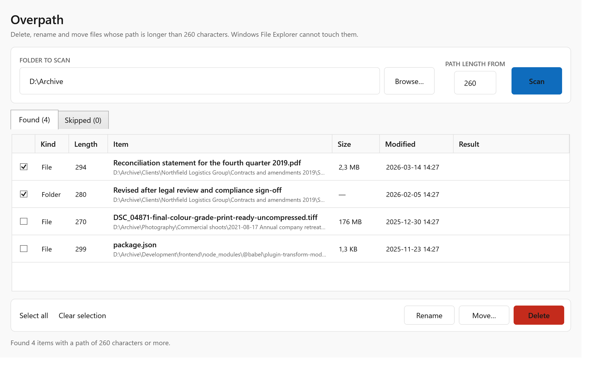

If a file’s full path is longer than 260 characters, File Explorer refuses to delete, rename or move it — and the error it gives you doesn’t say why. Overpath works on those files directly, the way Windows itself does internally.

Windows has an old limit called MAX_PATH: 260 characters. Modern Windows
can work past it, and the underlying system calls have supported longer paths for years.
File Explorer, however, never opted in.
“File Explorer and Office desktop apps do not currently opt in to long path support.” — Microsoft support documentation
So even if you enable long paths in the registry, Explorer still refuses. The usual advice online is to install a file archiver and rename the file from inside it, or to shorten every parent folder by hand until the total drops under the limit.
Overpath skips all of that. It calls the Windows file APIs in their extended form, which has no 260-character limit, and operates on the file directly.
Cloud folders that sync a nested structure, node_modules trees,
scanned document archives with descriptive folder names, and anything copied
from a server share into an already-deep folder.
“The file name is too long”, “The source file name is longer than supported”, or a delete that simply does nothing. Sometimes the folder cannot even be opened.
Scans a folder, lists every item past the limit with its exact path length, and lets you delete, rename or move them. Folders are removed from the inside out, so nothing is left stuck.
Pick any folder or drive. You can lower the length threshold if you want to see items that are merely close to the limit.
The scan runs in the background and can be stopped at any time. Folders it cannot read, usually for permission reasons, are listed separately rather than silently skipped.
Tick the items and delete, rename or move them. Every result is shown per row, with the actual reason when something fails.
Scanning is free forever. Pay once if you need to act on what you find.
The licence is verified on your own machine by a cryptographic signature. Overpath never contacts a server, so it keeps working if your internet drops, and there is nothing about you for us to collect.
Windows 10 and 11, 64-bit. One file, nothing to install, no admin rights needed. Run it from anywhere, including a USB stick.
Windows SmartScreen warns about any program it has not seen downloaded many times before. The warning is about reputation, not about anything found in the file. It fades as more people download the same build.
A code signing certificate would reduce the warning, but certificate authorities do not currently issue them to individual developers in every country. Rather than hide that, it is stated here plainly.
No. Overpath makes no network connections at all — not for licensing, not for updates, not for analytics. The licence key is checked locally against a signature. You can confirm this with any firewall or network monitor.
No. Overpath is not an undelete tool. It operates on files that still exist but cannot be reached by File Explorer.
The operation will fail and the row will say the file is open elsewhere. Close the program holding it and run the operation again. Overpath will not force-close other applications or unload their file handles.
You can, and it helps some applications. It does not help File Explorer, which has not opted in to long path support. Enabling it also does nothing for files that are already stuck.
No. It is a one-time payment for the current major version, the key works offline, and there is no subscription.
Yes. One licence covers one person on the machines they personally use. For deploying across a team, get in touch.